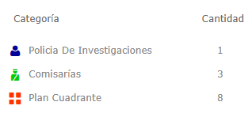
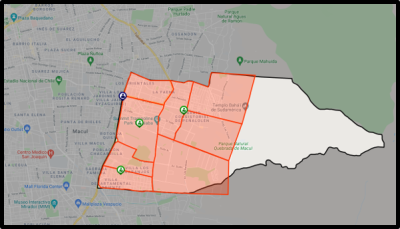

Seguridad
Una buena seguridad es necesaria para toda comunidad, ya que afecta directamente al desarrollo y sustento de ésta. Además, aunque varios estudios muestren que los actos criminales en la comuna de Peñalolén han disminuido a través de los años, eso no significa que uno se tiene que confiar y no salir conociendo las medidas de seguridad que la municipalidad entrega. En esta página mostramos un mapa con toda la información disponible con respecto a las comisarías disponibles y sus respectivos cuadrantes.
Leyenda:

